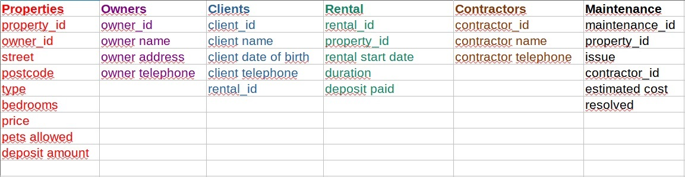

Normalization of databases - an exercise
An exercise about normalization of databases (Third Normal Form, 3NF).

An exercise about normalization of databases (Third Normal Form, 3NF).
Normalization is a process of organizing data in tables to minimize the amount of data presented in a single query to not repeat data that is not necessary to gain desired information. During the course I have learnt about three stages of normalization that I described in my learning outcomes. The knowledge I gained, allowed me to do a task to normalize two tables provided in a formative activity in Unit7. The result of my work is presented below:

In this task I combine ''tenant'' and ''client''. In my opinion, they stand for the same role. In the tables, I use only ''client''. Moreover, I added IDs (as primary keys) in each table because I find it clear and easy to follow.
Learning outcomes:
1) First Normal Form (1NF): each row of a table consists of exactly one value that belongs to the same type that represents the lowest level of detail (Atomic), a table has to have one primary key, and a unique name for every attribute/column. (Carpenter 2008; Eessaar 2016)
2) Second Normal Form (2NF): follow the rules of 1NF, every non-primary key attribute is fully dependent on the primary key, and there is no partial dependency(Connolly & Beg, 2015; Upadhyay 2019)
3) Third Normal Form (3NF): follows the rules of 2NF and there is no transitive dependency with attributes that are non-prime (Upadhyay 2019). Tables in 3NF are normally sufficient for most practical database applications (Carpenter, 2008)
Literature:
Eessaar, E. (2016) The Database Normalization Theory and the Theory of Normalized Systems: Finding a Common Ground, Baltic J. Modern Computing, Vol. 4 (2016), No. 1, 5-33
Carpenter, Donald A. (2008) "Clarifying Normalization," Journal of Information Systems Education: Vol. 19 : Iss. 4 , 379-382.
Connolly, T. & Beg, C. (2015) Database Systems: A Practical Approach to Design, Implementation, and Management. Global Edition. Edinburgh: Pearso.
Upadhyay M. 2019 [online] Available at: https://www.geeksforgeeks.org/second-normal-form-2nf/?ref=lbp [Accessed: 22. 05. 2022].
Upadhyay M. 2019 [online] Available at: https://www.geeksforgeeks.org/third-normal-form-3nf/?ref=lbp [Accessed: 22. 05. 2022].